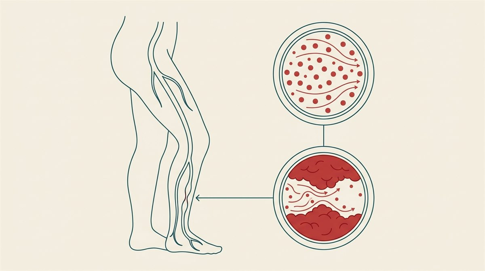

什麼是周邊動脈疾病？
周邊動脈疾病（peripheral artery disease, PAD）是指把血液從心臟帶往四肢的周邊動脈變窄或阻塞，最常影響下肢（腿與腳），也可能發生在骨盆腔或手臂的動脈。它的主要成因和心臟病一樣，都是動脈粥狀硬化（atherosclerosis，血管壁堆積斑塊），使血流減少、組織「供血不足」。
PAD 相當常見——全球估計超過 2 億人受影響，光是美國就約有 1,200 萬名 40 歲以上成人罹患。它目前無法「根治」，但只要及早發現、積極管理，多數人都能有效控制症狀、避免嚴重併發症。

症狀
PAD 的表現差異很大，從完全沒感覺，到走幾步就痛、甚至靜止時也痛都有：
- 間歇性跛行（claudication）——走路時小腿、大腿或臀部出現痠痛、抽筋、麻木或無力，停下來休息（通常約 10 分鐘內）就緩解，再走又痛。這是最典型的症狀。
- 疼痛位置反映阻塞位置：臀部、髖部或大腿不適，多與下腹主動脈或髂動脈狹窄有關；小腿不適則常是股動脈或膕動脈狹窄。
- 很多人完全沒有症狀，往往是因其他風險因子做檢查時才被發現。
當血流嚴重不足時，會出現以下警訊症狀，代表病情較重、需盡快就醫：
- 靜止痛（rest pain）——腿、腳或腳趾出現灼熱或痠痛，平躺時尤其明顯。
- 傷口或潰瘍不易癒合，尤其是腳與腳趾，且容易感染。
- 皮膚顏色改變——變得蒼白、發紫、發綠甚至發黑。
- 腳摸起來冰冷、有針刺或麻麻的感覺。
- 勃起功能障礙——當下腹主動脈或髂動脈變窄時可能出現。
疾病分期
臨床上常依症狀嚴重度把 PAD 分為四個階段，愈後面代表血流受阻愈嚴重、風險愈高：
| 分期 | 特徵 | 發生比例 |
|---|---|---|
| 無症狀 PAD | 日常沒有明顯症狀，但活動量可能已受限 | 常見，多靠篩檢發現 |
| 慢性症狀 PAD | 活動時腿部不適（間歇性跛行），休息後緩解 | — |
| 慢性肢體威脅性缺血（CLTI） | 嚴重阻塞導致靜止痛、傷口不癒，甚至組織壞死（壞疽） | 每 100 名 PAD 約 12–20 人 |
| 急性動脈阻塞 | 血栓突然堵住下肢血流，屬急症，須立即處置 | 每 100 名有症狀 PAD 少於 2 人 |
※ 分期僅為概念性說明，實際評估仍須由醫師依症狀、檢查與影像綜合判斷。
為什麼 PAD 很重要？
PAD 不只是「腿的問題」——它是全身動脈粥狀硬化的警訊。斑塊往往不只堆在腿部動脈，也會出現在心臟與腦部的血管，所以有 PAD 的人，心臟病發作與中風的風險明顯較高。若放著不治療，嚴重者可能進展到肢體缺血，甚至面臨截肢。
成因與風險因子
最主要的成因是動脈粥狀硬化：膽固醇等斑塊堆積在血管壁、使管腔變窄；斑塊一旦破裂，血小板聚集形成血栓，會讓血流更受限。少數情況則與血管炎（vasculitis）或膕動脈壓迫症候群（PAES）等有關。
常見的風險因子包括：
- 吸菸與糖尿病——這是 PAD 最強的兩個風險因子，會使罹病風險升高為約 2～4 倍。
- 高血壓
- 高膽固醇或高三酸甘油酯
- 慢性腎臟病
- 已有冠狀動脈疾病（心臟血管也有動脈硬化）
- 年齡增長——風險隨年齡上升。
診斷
醫師會先問診（症狀何時發生、走多遠會痛）並做理學檢查，包括觸摸腿部各處的脈搏。常用的檢查有：
- 踝肱指數（ABI, ankle-brachial index）——比較腳踝與手臂的血壓比值，數值偏低代表下肢血流受阻。這是有症狀 PAD 常做的第一線檢查，簡單、非侵入性。
- 血管超音波——測量動脈內的血流速度，找出狹窄位置。
- 脈搏容積記錄（PVR）——評估下肢的血流與組織灌流。
- 電腦斷層血管攝影（CTA）／磁振血管攝影（MRA）——產生血管的詳細影像，看出狹窄或阻塞的程度與位置。
治療
PAD 的治療分成三個層面：生活型態、藥物、血管介入／手術。前兩者是所有病人的基礎，多數人靠這兩項就能有效控制。
1. 生活型態（最重要的基礎）
- 戒菸——這是管理 PAD 最關鍵的一件事。除了直接傷害血管，戒菸與否甚至影響存活：資料顯示，PAD 診斷後戒菸的人，約每 100 人有 86 人存活至少 5 年；持續吸菸者則只有約 69 人。需要時可尋求戒菸門診、尼古丁替代療法與諮商協助，並避免二手菸。
- 監督式運動治療（SET, structured exercise therapy）——由專業人員指導、在跑步機上走路、痛了就休息再繼續，是對 PAD 最有幫助的運動方式，能有效改善跛行與行走距離。
- 護心飲食——以地中海飲食或得舒飲食（DASH）為原則，多蔬果、全穀、堅果、豆類，少飽和脂肪與超加工食品。
2. 藥物
- 抗血小板藥物——如阿斯匹靈（aspirin）或 clopidogrel，降低血栓風險。
- 低劑量抗凝血藥物——如低劑量 rivaroxaban，用於特定病人進一步降低事件風險。
- Cilostazol——一種血管擴張劑，可幫助動脈打開、延長能走的距離、改善跛行。
- 史他汀類（statin）降膽固醇藥物——不只降 LDL，還能保護肢體、降低截肢與心血管死亡風險。
- 控制血壓與血糖的藥物，可同時降低心臟病發作、中風與死亡風險。
3. 血管介入與手術
當症狀嚴重、影響生活或出現肢體威脅性缺血時，可考慮恢復血流的處置：
- 血管成形術（氣球擴張）＋支架——撐開狹窄處並維持通暢。
- 斑塊清除術（atherectomy）——以導管移除血管內斑塊，屬微創。
- 動脈內膜切除術（endarterectomy）——以手術清除斑塊。
- 周邊動脈繞道手術——建立一條新的血流路徑，繞過阻塞的血管段。
足部自我照護（糖尿病患者尤其重要）
因為血流變差，PAD 患者的傷口癒合慢、感染也不易好，一個小傷口就可能惡化。日常請養成護足習慣：
- 每天檢查雙腳，看有沒有裂傷、水泡或潰瘍（可用鏡子看腳底）。
- 每天清洗並徹底擦乾雙腳，尤其趾縫。
- 不要赤腳走路，避免受傷。
- 穿合腳的鞋襪，不擠壓、不磨腳。
- 發現傷口不癒或有感染跡象，及早就醫，不要自行處理拖延。
什麼時候該就醫？
建議安排門診評估的情況：
- 出現新的或惡化的腿部症狀，或已影響日常行走。
- 休息時腿也會痛。
- 腳或腳趾出現不會癒合的傷口或潰瘍。
- 就算沒症狀，但有吸菸、糖尿病等風險因子，也建議主動評估。
以下情況屬急症，請立即就醫：
- 突然無法感覺或無法移動一隻腳。
- 一隻腳突然變色、外觀和另一隻明顯不同。
預後：可控制的慢性病
PAD 是需要長期管理的慢性病，無法「治好」，但好消息是——只要按時服藥、規律運動、堅持戒菸並控制三高，絕大多數人都能避免截肢，並降低心臟病與中風風險。其中戒菸帶來的存活效益最大。定期回診追蹤，能及早抓到需要處理的問題。整體護心原則可參考心血管保健八要素。